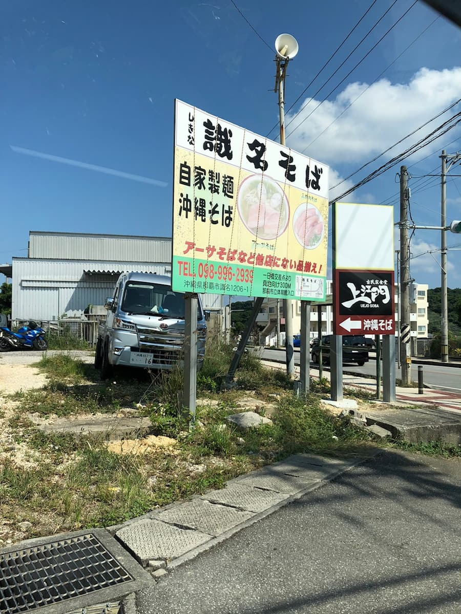
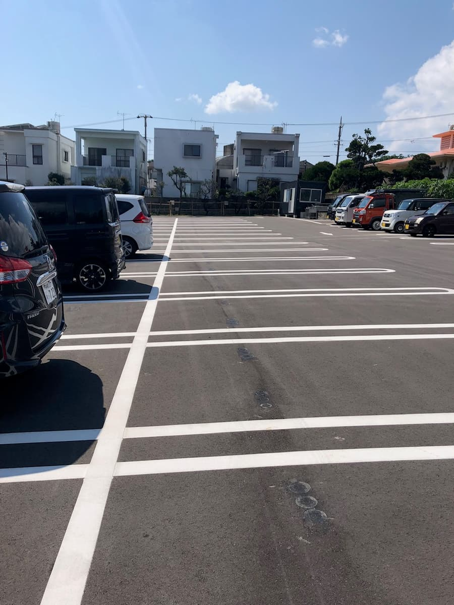
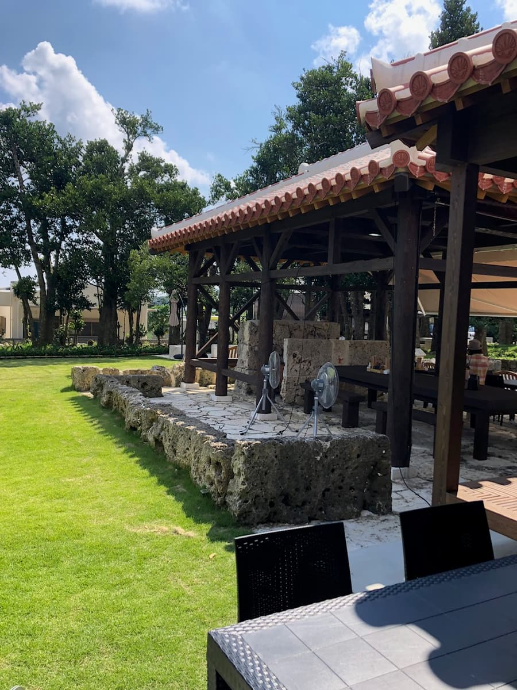
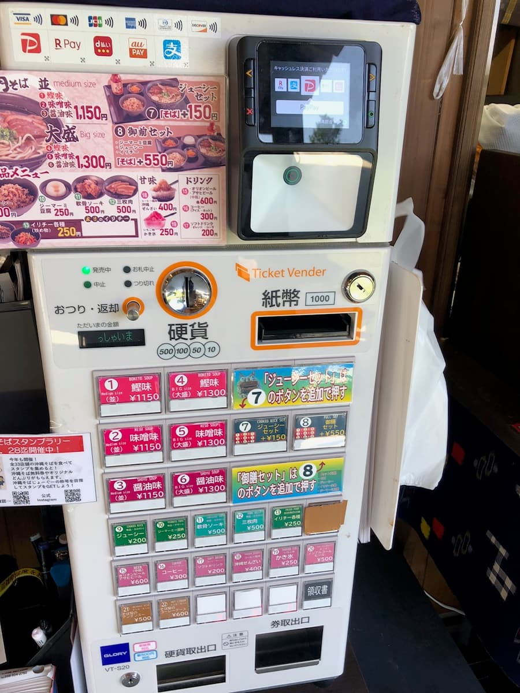
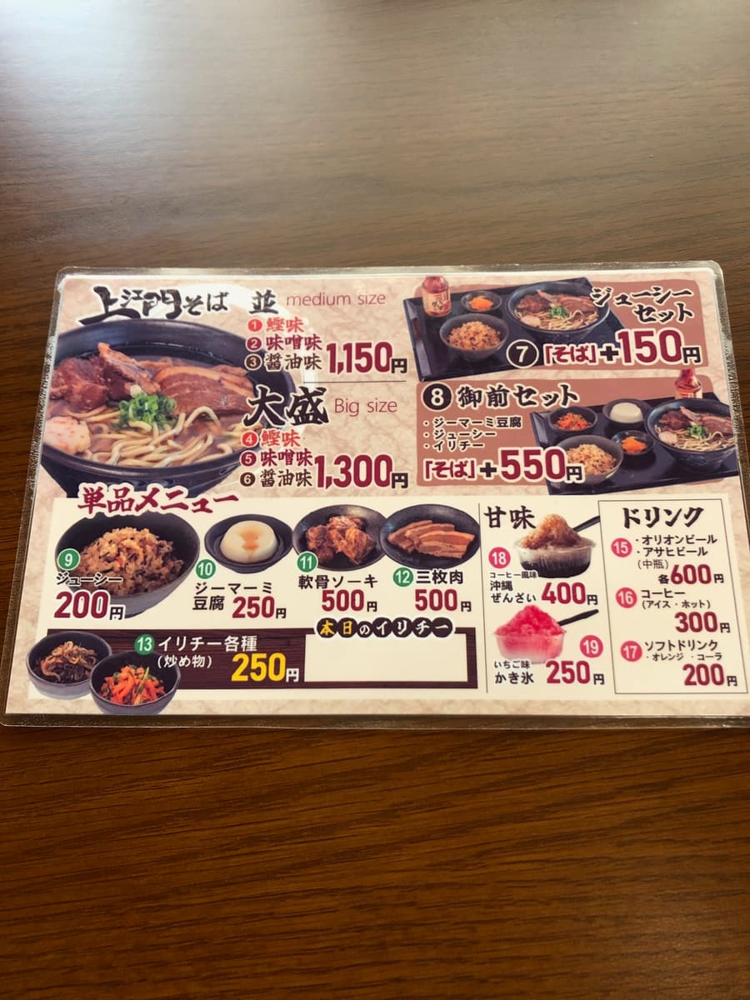
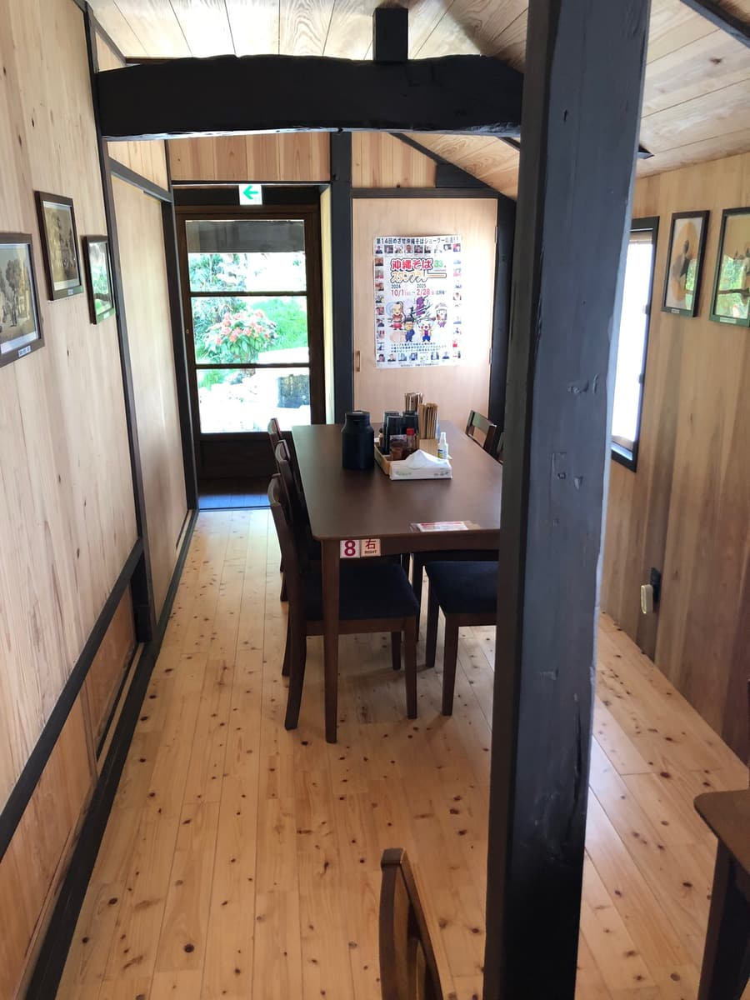
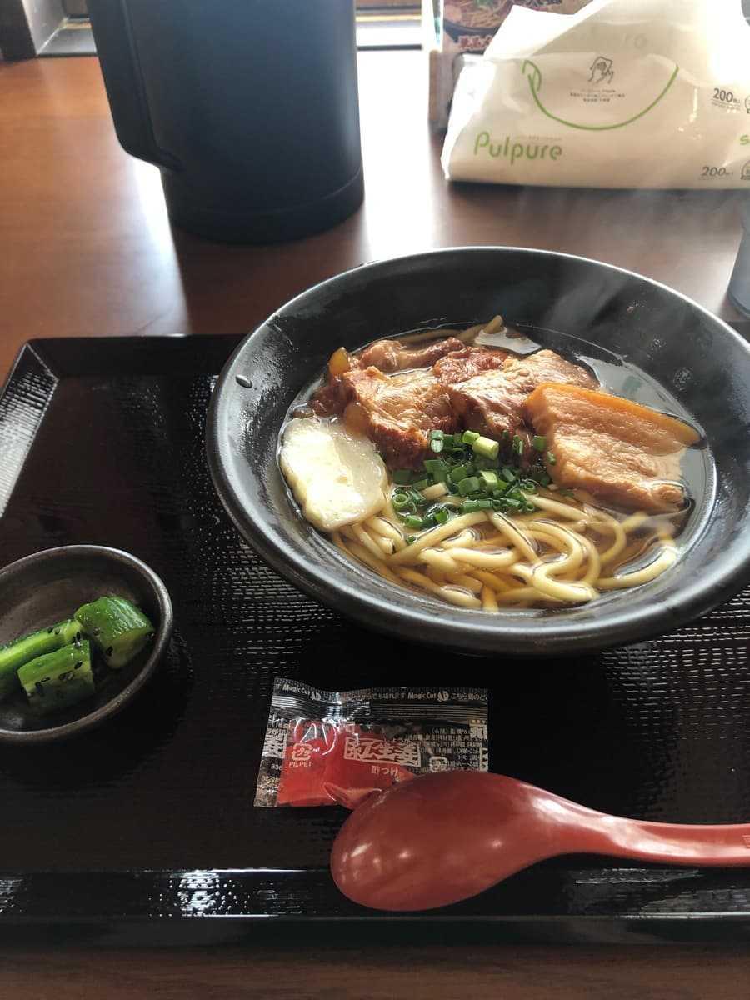
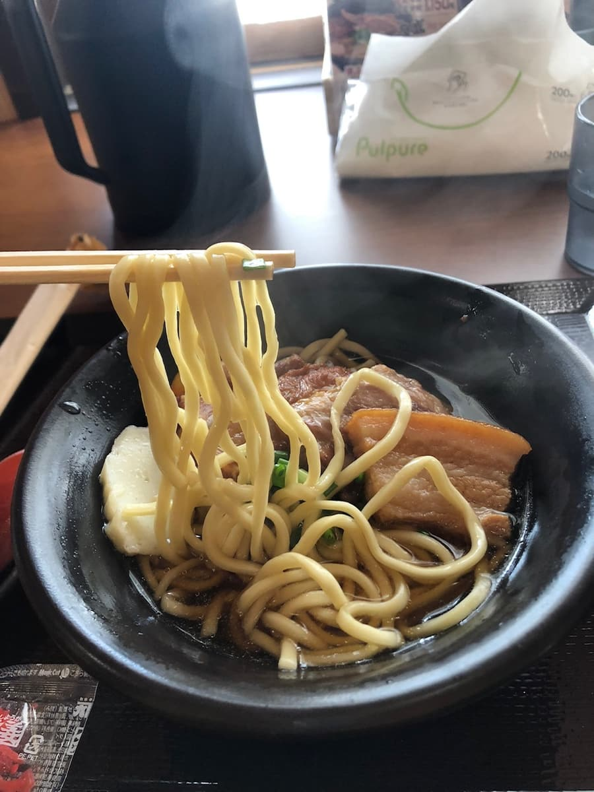
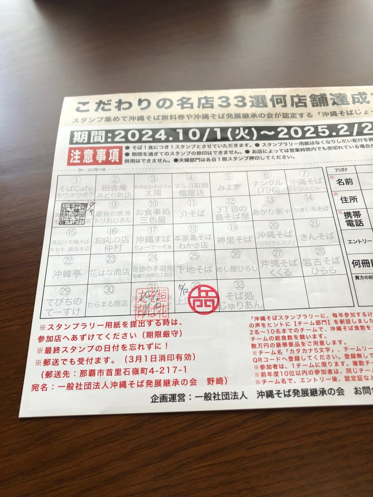

※こちらの記事はＡＩ（Chat GPT 4o）で作成し、一部加筆しています😁
2024.10に食べました😆
今回訪れたのはスタンプラリー参加店でもある「上江門そば」🍔ですね。



お店に着いてまず目を引いたのは、その広々とした駐車場⛽ですね。車で訪れるお客さんにとってはありがたいポイントですね🚗。そして、赤瓦の屋根が印象的な古民家風の建物🏡です。店内は木の温もりが感じられる内装で、座席もゆったり配置されており、どこかホッとする雰囲気ですね😌。外にはテラス席もあり、晴れた日は自然を感じながら食事が楽しめるのも魅力的でした🌞。

メニューを見ると、「上江門そば」はスープが鰹味、味噌味、醤油味の3種類から選べる仕様🍲ですね。これは少しラーメンっぽいアプローチで、そば好きとしては新鮮な印象を受けました😊。今回はおすすめとされる鰹味をチョイスしました👍。券売機でチケットを購入するスタイルで、キャッシュレス対応も完璧ですね💳。観光客が多いエリアならではの工夫が光ります✨。今回はこのお店の看板メニューである「上江門そば」をいただきました。



運ばれてきた「上江門そば」は、見た目からしてシンプルながらも食欲をそそるビジュアル🍜ですね。スープを一口飲むと、しっかりとした鰹出汁の風味が広がる味わいです🍼。


麺は中太のストレート麺で、しっかりとしたコシがあります🍟ね。もちもち感とツルツル感が両立していて、個人的にはなかなか好みの食感でした😋。具材には三枚肉と軟骨ソーキがたっぷり乗っており、それぞれしっかり味が染みています🍖ね。特に軟骨ソーキは柔らかく煮込まれていて、口の中でほろりと崩れる食感が良いですね……が、どちらも部位によって筋っぽさが感じられるのが少し残念なところでした🙅♀️。
また、セットメニューでジューシーや小鉢を追加することもでき、ボリュームを調整できるのも嬉しいポイント🍳ですね。今回はそば単品にしましたが、次回来るときはぜひセットで試してみたいです😎。
この「上江門そば」、お店全体の雰囲気やスープの選択肢の多さ、そして観光客にも対応したサービスなど、総合的に見て新しいスタイルの沖縄そばを提案している印象を受けました🌟。

評価（9点/15点）：普通に美味しいです🎨その居心地の良さと美しい古民家風の佇まいは、一度訪れる価値ありです🙌。次は別の味を試してみようかな、と思わせるお店でした🍲✨。みなさまも一度は如何でしょうか？
麺 ：★★★☆☆（3）
スープ：★★★☆☆（3）
具 ：★★★☆☆（3）